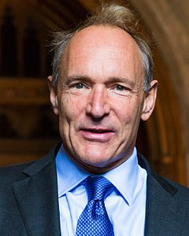

 Сэр Тимоти Джон Бе́рнерс-Ли OM (англ. Sir Timothy John «Tim» Berners-Lee; род. 8 июня 1955 года, Лондон) — изобретатель URI, URL, HTTP, HTML, создатель Всемирной паутины (совместно с Робертом Кайо) идействующий глава Консорциума Всемирной паутины. Автор концепции семантической паутины. Автор множества других разработок в области информационных технологий.
Содержание
Родители — Конуэй Бернерс-Ли русск. и Мэри Ли Вудс — были математиками и трудились над созданием одного из первых компьютеров «Марк I».
Учился в школе Эмануэль в Уондсуэрте, затем в оксфордском Королевском колледже. Там он собрал свой первый компьютер на базе процессора M6800 с телевизором вместо монитора. Один раз Тим и его друг были пойманы при проведении хакерской атаки, за это они были лишены права пользоваться университетскими компьютерами.
После окончания Оксфордского университета в 1976 году со степенью бакалавра физики с отличием Бернерс-Ли поступил на работу в компанию «Plessey Telecommunications Ltd» в графстве Дорсет, где проработал два года, занимаясь в основном системами распределённых транзакций.
В 1978 году Бернерс-Ли перешёл в компанию «D.G Nash Ltd», где занимался программами для принтеров и создал подобие многозадачной операционной системы.
Затем он полтора года проработал в Европейской лаборатории по ядерным исследованиям ЦЕРН (Женева, Швейцария) консультантом по программному обеспечению. Именно там он для собственных нужд написал программу Enquire, которая использовала случайные ассоциации и заложила концептуальную основу для Всемирной паутины.
С 1981 по 1984 год Тим Бернерс-Ли работал в компании «Image Computer Systems Ltd» системным архитектором.
В 1984 году он получил стипендию в CERN и занялся там разработкой распределённых систем для сбора научных данных. В это время он работал над системой «FASTBUS» и разработал свою систему Remote Procedure Call.
В 1989 году, работая в CERN над внутренней системой обмена документов Enquire, Бернерс-Ли предложил глобальный гипертекстовый проект, ныне известный как Всемирная паутина. Проект был утверждён и реализован.
С 1991 по 1993 год Тим Бернерс-Ли продолжал работу над Всемирной паутиной. Он собирал отзывы от пользователей и координировал работу Паутины. Тогда он впервые предложил для широкого обсуждения свои первые спецификации URI, HTTP и HTML.
В 1994 году Бернерс-Ли стал главой кафедры Основателей 3Com в Лаборатории информатики MIT. Он является ведущим исследователем кафедры на данный момент. После слияния Лаборатории информатики с Лабораторией искусственного интеллекта в MIT образовалась Лаборатория информатики и искусственного интеллекта.
В 1994 году он основал Консорциум Всемирной паутины при Лаборатории информатики (англ. Laboratory for Computer Science, LCS) MIT. С тех пор и по сей день Тим Бернерс-Ли возглавляет этот консорциум. Консорциум занимается разработкой и внедрением стандартов для Интернета. Консорциум ставит перед собой задачу полностью раскрыть потенциал Всемирной паутины, сочетая стабильность стандартов с их быстрой эволюцией.
В декабре 2004 года Тим Бернерс-Ли стал профессором Саутгемптонского университета. При серьёзной поддержке университета он надеется осуществить проект семантической паутины.
Сейчас сэр Тим живёт в пригороде Бостона с женой и двумя детьми, часто бывает в разъездах по всему миру.
В 1989 году, работая в CERN, Бернерс-Ли предложил проект, известный как Всемирная паутина (англ. World Wide Web). Проект подразумевал публикацию гипертекстовых документов, связанных между собой гиперссылками, что облегчило бы поиск и консолидацию информации. Проект Паутины был предназначен для учёных CERN и первоначально использовался во внутренней сети CERN. Для осуществления проекта Тимом Бернерсом-Ли (совместно с его помощниками) были изобретены идентификаторы URI (и, как частный случай, URL), протокол HTTP и язык HTML. Эти технологии легли в основу современной Всемирной паутины. В период с 1991 по 1993 год Бернерс-Ли усовершенствовал технические спецификации стандартов и опубликовал их.
В рамках проекта Бернерс-Ли написал первый в мире веб-сервер «httpd» и первый в мире гипертекстовый веб-браузер для компьютера NeXT, называвшийся «WorldWideWeb» (позднее «Nexus», чтобы избежать путаницы между названием технологии («Всемирная сеть») и названием браузера). Этот браузер был одновременно и WYSIWYG-редактором (англ. WYSIWYG от What You See Is What You Get, «что видишь, то и получишь»), его разработка велась с октября по декабрь 1990 года. Программа работала в среде «NeXTStep» и начала распространяться по Интернету летом 1991 года.
Первый в мире веб-сайт Бернерс-Ли создал по адресу http://info.cern.ch (теперь сайт хранится в архиве). Этот сайт появился онлайн в Интернете 6 августа 1991 года. На этом сайте описывалось, что такое Всемирная паутина, как установить веб-сервер, как заполучить браузер и т. п. Этот сайт также являлся первым в мире интернет-каталогом, потому что позже Тим Бернерс-Ли разместил и поддерживал там список ссылок на другие сайты.
Главный литературный труд Бернерса-Ли — это книга «Плетя паутину: истоки и будущее Всемирной паутины» (англ. «Weaving the Web: Origins and Future of the World Wide Web», Texere Publishing, 1999, ISBN 0-7528-2090-7). В этой книге он рассказывает о процессе создания Паутины, её концепции и своём видении развития Интернета. В этом основополагающем труде автор говорит о нескольких важных принципах:
Бернерс-Ли написал вступление к книге «Прядя семантическую паутину: полное раскрытие потенциала Всемирной паутины» (англ. «Spinning the Semantic Web: Bringing the World Wide Web to Its Full Potential», The MIT Press, 2005, ISBN 0-262-56212-X), где раскрывает концепцию семантической паутины, в которой он видит будущее Интернета.
Семантическая паутина — это надстройка над существующей Всемирной паутиной, которая призвана сделать размещённую в сети информацию более понятной для компьютеров. При этом каждый ресурс на человеческом языке был бы снабжён описанием, понятным компьютеру. Семантическая паутина открывает доступ к чётко структурированной информации для любых приложений, независимо от платформы и независимо от языков программирования. Программы смогут сами находить нужные ресурсы, классифицировать данные, выявлять логические связи, делать выводы и даже принимать решения на основе этих выводов. При широком распространении и грамотном внедрении семантическая паутина может вызвать революцию в Интернете.
Сэр Тимоти Джон Бернерс-Ли является почётным профессором следующих университетов:
Тим Бернерс-Ли также является Выдающимся членом Британского компьютерного общества, Почётным членом Института электроинженеров, Почётным членом Общества технических коммуникаций, членом Фонда Гильермо Маркони, членом Американской академии искусств и наук, членом Королевского общества (2001) и Королевской инженерной академии, членом Американского философского общества, иностранным членом Национальной академии наук США (2009).
Тим Бернерс-Ли отмечен множеством наград самого разного, в том числе и международного, уровня. Ниже перечислены некоторые из них.